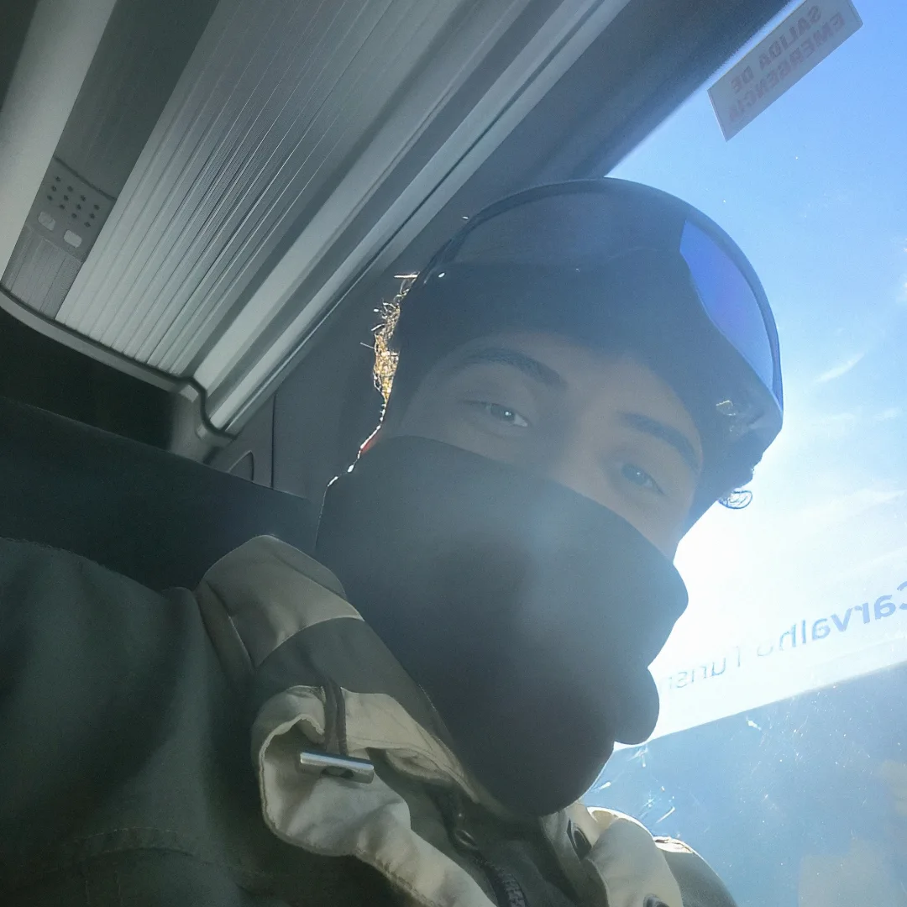

Felippe Tuma
Coordenou a estruturação fundamental do e-commerce, estabelecendo as diretrizes de otimização para motores de busca e implementando as ferramentas de interação e conversão nas páginas principais.
Conheça os membros por trás do site Agnello Vinherias.
Coordenou a estruturação fundamental do e-commerce, estabelecendo as diretrizes de otimização para motores de busca e implementando as ferramentas de interação e conversão nas páginas principais.
Exerceu a função de curador de conteúdo e ativos digitais, sendo o responsável pela adaptação da narrativa histórica da família Agnello para o meio digital e pela gestão do catálogo de produtos.
Especializou-se na humanização da plataforma através da secção de equipe e no desenvolvimento de conteúdos de valor acrescentado, como os guias educativos de degustação para os clientes.

Atuou como o responsável pela integridade visual e padronização estética do portal, assegurando a consistência do design e a organização técnica em todas as interfaces do projeto.